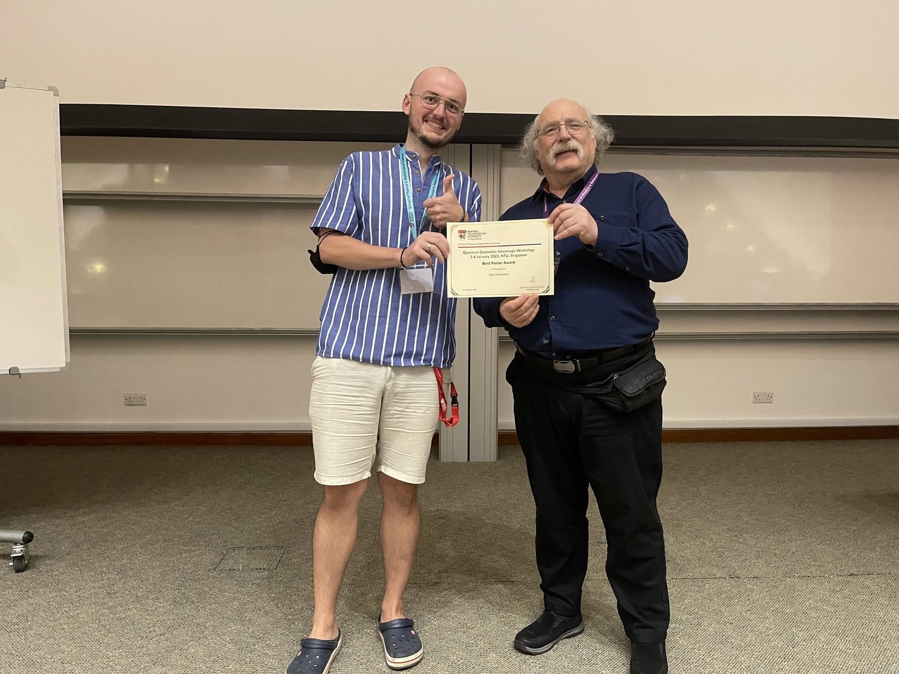

Updates
News
Personal website launched
I launched this website as a central place for selected research, quantitative-system development, independent creative work, public-outreach achievements, and future project updates.
Kramers dichroism published in Physical Review Research
“Kramers Dichroism in PT-Symmetric Magnets,” with Ying Xiong and Justin C. W. Song, was published in Physical Review Research. The work shows how optical responses can access the internal degree of freedom of Kramers-degenerate states and diagnose their quantum geometry.
Superconducting Berry curvature dipole published in Physical Review Letters
“Superconducting Berry Curvature Dipole,” with Giovanni Vignale and Justin C. W. Song, was published in Physical Review Letters. The work identifies a collective quantum-geometric response that enables pronounced, nondissipative nonlinearities in noncentrosymmetric superconductors.
Development of Vyrva begins
Development began on Vyrva, an independent dark strategy-survival game set in a fractured coastal city. Cracks of insanity are spreading through the city; the horrors are still to come.
Quantum materials and quantum information at SPICE
I attended the SPICE workshop “Quantum Materials and Quantum Information Science” in Ingelheim, Germany. Discussions explored direct uses of quantum-material properties in information storage, sensing, and qubit design, including van der Waals devices, moiré platforms, unconventional superconductivity, and correlated quantum phases.
First live-trading milestone
The quantitative trading system completed its first successful live execution cycle, including order placement, position tracking, state persistence, and performance reporting. Development has since focused on risk gating, improved execution and recovery, performance reporting, and a visual control interface; the expanded system is now undergoing paper testing.
Invited talk on superconducting quantum geometry at the University of Bath
I presented an invited talk at the IOP Conference on Quantum Geometry in Quantum Materials at the University of Bath. The talk introduced the superconducting Berry curvature dipole and its connection to gap structure, nonreciprocal response, and strong nondissipative nonlinearities.
Kramers nonlinearity presented at the IPS Meeting
I presented “Kramers Nonlinearity in PT-Symmetric Magnets” at the 2024 Institute of Physics Singapore Meeting at NTU. The work introduced nonlinear optical responses that arise specifically from Kramers degeneracy and can probe the internal geometry of Kramers-paired states.
Best Poster Award at the Quantum Geometric Advantage workshop
I received the Best Poster Award for work on the layer photovoltaic effect in van der Waals heterostructures. The diploma was presented by Nobel laureate F. Duncan M. Haldane.

Updates